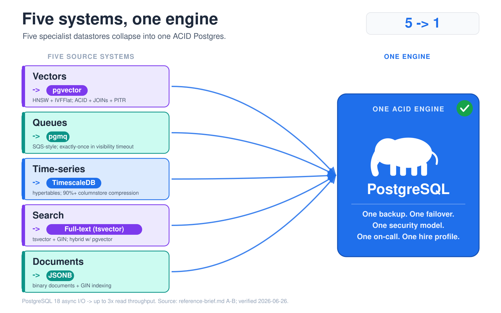
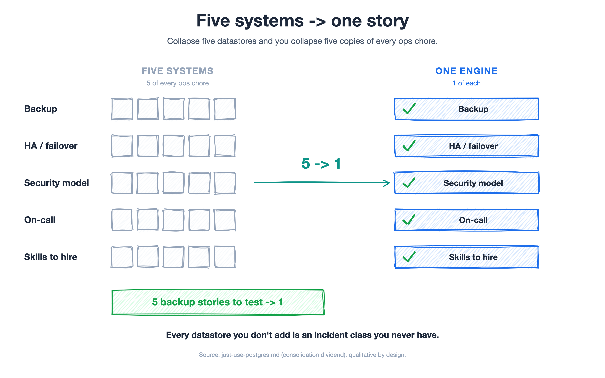
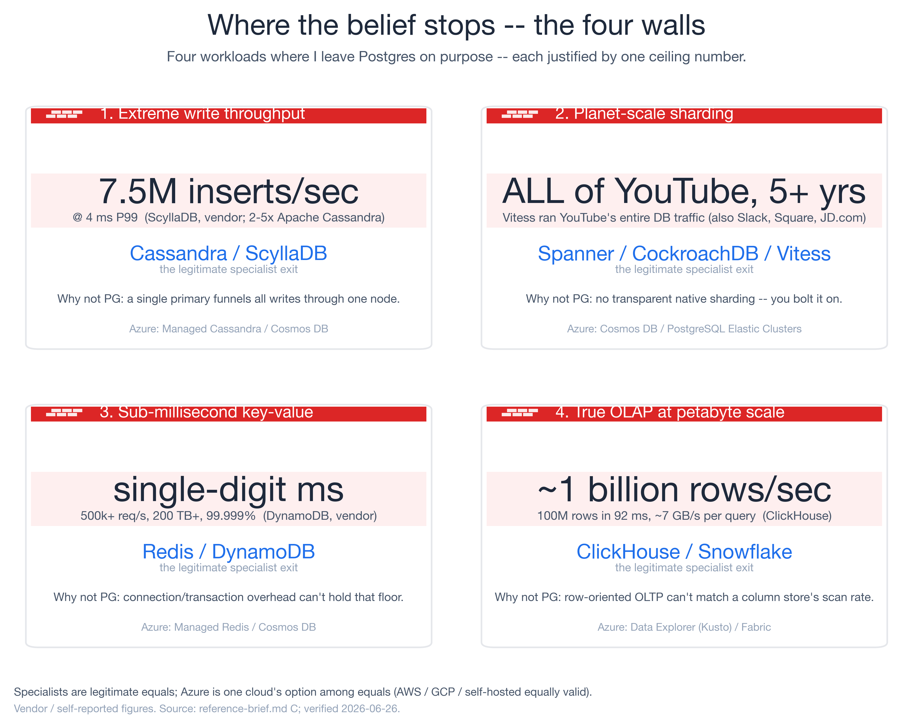
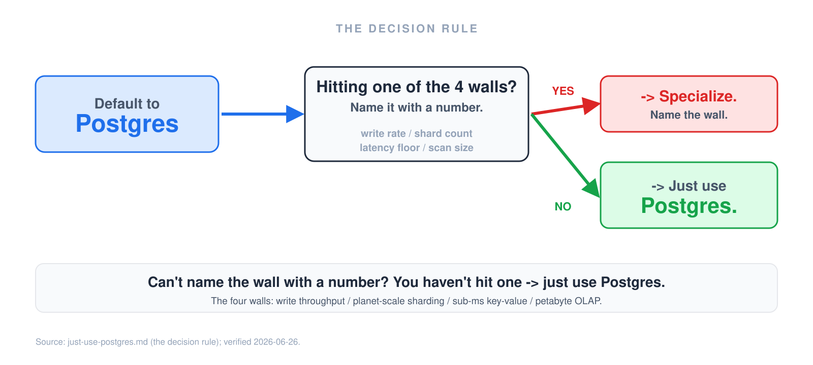

Across years of working with customers, I've lost count of how many teams I've helped untangle the same knot. One sticks with me: a team running five moving parts to serve one product — Postgres for the relational core, a standalone Redis for the hot path, Elasticsearch for search, a separate message queue for background jobs, and a cron service to fire the scheduled work. Five datastores. Five backup stories. Five things to monitor, patch, secure, and get paged about at 2 a.m.
We collapsed all of it into one Postgres.
Elasticsearch split into Postgres full-text search (tsvector) for lexical queries and
pgvector for semantic search. The message queue moved into
a Postgres-native queue. The cron service became pg_cron. Redis's hot path folded back into the
database it was caching in the first place. Five systems became one. Four managed-service bills
disappeared, the datastore line on the cloud invoice fell with them, and — quietly — the
architecture diagram stopped being something you needed a meeting to explain.
That pattern — repeated across enough customers that I now expect it — is what made me a believer. It also taught me exactly where the belief stops.
"Just use Postgres" stopped being a meme
For years, "just use Postgres" was a half-joke developers told each other to push back on résumé-driven database sprawl. It is not a joke anymore. It is the measured default.
In the Stack Overflow 2024 Developer Survey, PostgreSQL is the most-used database for the second year running at 48.7% — ahead of MySQL (40.3%), SQLite (33.1%), SQL Server (25.3%), and MongoDB (24.8%). That share climbed from 33% in 2018 to 48.7% in 2024. It is also the most-admired database at 47.1% and the most-desired at 74.5% — the database people use and the one they want to use next. The DB-Engines popularity trend tells the same story over a longer window: a steady multi-year climb while most conventional relational engines flatten out.
And this is not nostalgia carrying an old engine. Postgres keeps absorbing serious systems work.
PostgreSQL 18 (September 2025)
shipped an asynchronous I/O subsystem that delivers up to 3× read throughput, plus B-tree skip
scan, virtual generated columns, native uuidv7(), and OAuth 2.0 authentication. PostgreSQL 19 is
already in beta. The engine is getting better at precisely the workloads that used to push you off
it.
The consolidation case: five systems, one engine
Here is the thesis in one line: most teams reaching for a second, third, or fourth datastore are solving a problem Postgres can already handle — and they are buying an operational tax to do it.

Five workloads, one engine — each specialist replaced by a Postgres extension.
Walk the five workloads people most often spin up a separate system for, and look at the Postgres answer and the operational consequence of not adding that system.
Vectors → pgvector. The moment you build anything with embeddings, the reflex is to stand up a dedicated vector database and a sync pipeline to keep it aligned with your source-of-truth tables. pgvector puts similarity search next to your relational data: HNSW and IVFFlat indexes, exact and approximate nearest-neighbor, and — the part that matters — full ACID transactions, JOINs, and point-in-time recovery. Your embeddings are backed up, access-controlled, and consistent with the rows they describe, with no second system to keep in sync.
Time-series → TimescaleDB. Metrics, events, and IoT readings are the classic "you need a purpose-built time-series database" case. TimescaleDB turns a Postgres table into a hypertable with automatic time partitioning, a columnstore that routinely hits 90%+ compression, and continuous aggregates that maintain rollups incrementally. You get time-series ergonomics without a second database to operate.
Queues → pgmq. Background jobs usually mean a broker — SQS, RabbitMQ, or Redis with a queueing layer bolted on. pgmq gives you an SQS-style queue inside Postgres with exactly-once delivery within a visibility timeout, no background worker and no external dependency — and it is already run in production by teams like Supabase and Tembo. The decisive detail: your job and the data it touches commit in the same transaction. No more "the row saved but the job never fired" class of bug.
Search → full-text (tsvector + GIN). Real lexical search — ranking, stemming, phrase queries —
runs natively through Postgres full-text search
with GIN indexes, no search cluster to provision. Pair it with pgvector and you get hybrid search:
lexical and semantic results fused with Reciprocal Rank Fusion, the pattern people reach for a
dedicated search platform to get.
Documents → JSONB. "We need a document database" almost always means "we need flexible,
queryable, indexed JSON." Postgres jsonb
is a binary document type with GIN indexing and a rich operator set — schemaless where you want it,
relational where you need it, in one engine.

The consolidation dividend: one backup, one failover, one security model, one on-call rotation.
Now the part that actually matters to whoever owns the budget and the pager. Five systems → one is not a tidiness win. It is one backup to test, one failover to rehearse, one security model to audit, one on-call rotation, and one set of skills to hire for. Every datastore you don't add is a category of incident you will never have, a sync pipeline you will never debug, and a vendor invoice you will never receive. That is the consolidation dividend, and after watching it pay off across team after team, it is why I tell customers to default to Postgres.
"But isn't one Postgres just one big blast radius?" It is the first objection a good architect raises, and the honest answer cuts the other way. Five systems are five failure domains — five patch cadences, five security surfaces, five things that can page you at 2 a.m. Collapsing them shrinks the aggregate surface where an incident can start; it does not enlarge it. And one engine is not one node: a consolidated Postgres still runs a primary with streaming (or synchronous, for a low RPO) replicas, automated failover, and isolation by schema and role — and you stand up a second instance the day a workload genuinely earns one. The real cost is honest: consolidation concentrates the upgrade-and-maintenance event. So you spend the dividend on doing high availability properly and rehearsing failover — the difference being you now rehearse it once, not five times.
Where the belief stops: the four breakpoints
Believer, not zealot. There are four walls where I reach for a specialist on purpose — not because Postgres "failed," but because the workload genuinely lives outside what one ACID engine on one primary node can do. If you cannot name which of these four you are hitting, you do not have one yet.

The four walls — each named with the number that justifies a specialist.
1. Extreme write throughput → Cassandra / ScyllaDB. A single Postgres primary funnels all writes through one node. When sustained ingest is the whole game, that is the wall. ScyllaDB's published benchmark claims a sustained 7.5 million inserts/sec at 4 ms P99 and 2×–5× the throughput of Apache Cassandra (ScyllaDB's own figures, against Aerospike). Every major cloud has a managed equivalent — ScyllaDB Cloud, Amazon Keyspaces, Google Cloud Bigtable, or Azure Managed Instance for Apache Cassandra — so this is a platform choice, not a winner.
2. Planet-scale horizontal sharding → Spanner / CockroachDB / Vitess. Postgres has no transparent native sharding; you bolt it on. Vitess exists precisely because MySQL and Postgres lack it — and it served all of YouTube's database traffic for more than five years, and runs at Slack, Square, and JD.com. Spanner and CockroachDB are built shard-native with global consistency from the ground up. Managed paths exist on every cloud — Google Cloud Spanner, CockroachDB Cloud, PlanetScale (managed Vitess), or, if you want to stay Postgres, the Citus-powered Azure Database for PostgreSQL Elastic Clusters.
3. Sub-millisecond key-value → Redis / DynamoDB. When you need a single-digit-millisecond floor under heavy concurrency, connection and transaction overhead make Postgres the wrong tool. DynamoDB advertises single-digit-millisecond performance at any scale, 500,000+ requests/sec, 200 TB+ tables, and 99.999% availability (AWS's stated figures); Redis serves from memory in the microsecond-to-low-millisecond band. Managed equivalents exist on every cloud — Amazon DynamoDB or ElastiCache, Google Cloud Memorystore, Redis Cloud, or Azure Managed Redis (the successor to Azure Cache for Redis).
4. True OLAP at petabyte scale → ClickHouse / Snowflake. Postgres is a row-oriented OLTP engine. It can run analytics, but it cannot match a column store's scan rate. ClickHouse documents a query processing 100 million rows in 92 ms — roughly a billion rows/sec at about 7 GB/sec — and routinely scans billions to trillions of rows. Managed column stores sit on every platform — ClickHouse Cloud, Snowflake, Google BigQuery, Amazon Redshift, or Azure Data Explorer / Microsoft Fabric. Tellingly, even one vendor's own OLTP docs point you away from the transactional engine and toward a column store for petabyte analytics — the breakpoint is real across vendors.
These are legitimate, correct choices for their case. Knowing exactly where the wall is — with a number attached — is what makes "just use Postgres" a real engineering position instead of a slogan.
The decision rule

The whole decision in one rule: name the wall with a number, or default to Postgres.
Default to Postgres. Reach for a specialist only when you can name which of the four walls you are hitting and put a number on it: the write rate, the shard count, the latency floor, the scan size. If you cannot name the wall with a number, you have not hit one — you have an itch to add a system. And every system you do not add is a backup, a failover, and an on-call rotation you do not run.
A framework for deciding: default-to-Postgres, justify the exit
You do not need to run benchmarks to make this call — you need a decision rule your team applies every time someone proposes a new datastore. Here is the one I give the leaders I work with.
Step 1 — Make Postgres the default of record. Write it down: new workloads land on Postgres unless a named wall is proven. This flips the burden of proof. The question stops being "can Postgres do this?" and becomes "have we shown it can't?" That single policy kills most résumé-driven sprawl before it reaches your invoice.
Step 2 — Demand a number, not a vibe. Any proposal to add a specialist must name which wall it clears and the threshold that forces it:
| Wall | Specialist class | The number that justifies leaving Postgres |
|---|---|---|
| Write throughput | Cassandra / ScyllaDB | Sustained ingest near millions of inserts/sec, single primary saturated |
| Horizontal sharding | Spanner / Vitess / Citus | Data + write volume past one node, transparent sharding is the product |
| Sub-ms key-value | Redis / DynamoDB | Hard single-digit-ms floor at 100k+ req/s sustained |
| OLAP scan | ClickHouse / Snowflake | Billion-row scans, column-store rates a row engine cannot match |
If no one can fill in the right-hand column with a measured figure, the wall is hypothetical and the default holds.
Step 3 — Price the operational tax. Every datastore you add is one more backup to test, failover to rehearse, security model to audit, on-call rotation to staff, and skill to hire for. Make that cost explicit in the decision: a specialist must beat Postgres by enough to pay for its own ops overhead, not just win on a benchmark slide.
Step 4 — Prove it cheaply before you buy. Before greenlighting a new system, have the team spend a week consolidating one workload back into Postgres (vectors via pgvector, queues via pgmq, time-series via TimescaleDB) and measure the result. It is a small, low-risk spike that almost always shifts the conversation — and it is far cheaper than a migration you regret.
Your move before the sixth datastore appears
Run a one-line audit on your current architecture: for every datastore beyond Postgres, can your team name the wall it clears and the number behind it? The ones that can't are consolidation candidates — fewer backups, fewer failovers, fewer invoices, a diagram you no longer need a meeting to explain.
Adopt the rule and the burden of proof inverts in your favor: default to Postgres, and make every exit justify itself with a number. Tell me the consolidation call you made — and which wall, if any, actually forced your hand.
References
| # | Claim | Source |
|---|---|---|
| 1 | Postgres most-used DB 48.7% (2nd yr); 33%→48.7% since 2018; 47.1% admired; 74.5% desired | Stack Overflow 2024 Developer Survey |
| 2 | Postgres popularity trending up over a multi-year window | DB-Engines trend |
| 3 | PG18 async I/O up to 3× read throughput; skip scan; UUIDv7; OAuth 2.0 | PostgreSQL 18 release |
| 4 | pgvector — HNSW/IVFFlat ANN, ACID, JOINs, PITR | github.com/pgvector/pgvector |
| 5 | TimescaleDB — hypertables, 90%+ columnstore compression, continuous aggregates | github.com/timescale/timescaledb |
| 6 | pgmq — exactly-once within visibility timeout; used by Supabase/Tembo | github.com/pgmq/pgmq |
| 7 | Postgres full-text search (tsvector + GIN) |
PostgreSQL FTS docs |
| 8 | Postgres jsonb document type + GIN indexing |
PostgreSQL JSON docs |
| 9 | pg_cron — in-database job scheduling | github.com/citusdata/pg_cron |
| 10 | ScyllaDB 7.5M inserts/s @ 4 ms P99; 2–5× Cassandra (vendor figures) | ScyllaDB benchmarks |
| 11 | Vitess ran all of YouTube's DB traffic 5+ yrs; Slack/Square/JD.com | vitess.io |
| 12 | DynamoDB single-digit ms, 500k+ req/s, 200 TB+, 99.999% (AWS figures) | aws.amazon.com/dynamodb |
| 13 | ClickHouse ~1B rows/s (100M rows in 92 ms), ~7 GB/s | clickhouse.com/docs |
| 14 | Azure Managed Instance for Apache Cassandra — Wall 1 managed option (one cloud among equals) | Microsoft Learn |
| 15 | Google Cloud Spanner — Wall 2 shard-native distributed SQL, global consistency | cloud.google.com/spanner |
| 16 | Azure Database for PostgreSQL Elastic Clusters (Citus sharding) — Wall 2 stay-Postgres path | Microsoft Learn |
| 17 | Azure Managed Redis (successor to Azure Cache for Redis) — Wall 3 managed option | Microsoft Learn |
| 18 | ClickHouse Cloud — Wall 4 managed column store | clickhouse.com/cloud |
| 19 | Google BigQuery — Wall 4 serverless data warehouse | cloud.google.com/bigquery |
| 20 | Azure Data Explorer (Kusto) / Microsoft Fabric — Wall 4 petabyte OLAP | Microsoft Learn |
Figures marked vendor/self-reported (Stack Overflow survey %, GitHub stars, ScyllaDB and DynamoDB benchmarks, ClickHouse throughput, and version numbers) are time-sensitive and were re-verified against primary sources on 2026-06-28. Re-check before redistributing.